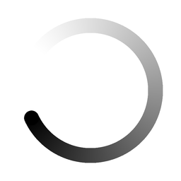

<!doctype html>
<html lang="zh-CN"><meta charset="utf-8"><title>Chat working · 16px</title>
<style>
@font-face{font-family:Harmony;src:url('../../../font/HarmonyOS_SansSC/Regular.woff2')}
*{box-sizing:border-box}body{margin:0;padding:64px;background:#f1f3f5;font:14px Harmony,sans-serif;color:#222}main{max-width:760px;margin:auto}h1{font-size:24px;font-weight:500;margin:0 0 12px}p{color:#777;margin-bottom:32px}.themes{display:grid;grid-template-columns:1fr 1fr;gap:20px}.card{padding:24px;background:#fff;border-radius:12px}.dark{background:#202224;color:#eee}.label{font-size:12px;opacity:.45;margin-bottom:24px}.row{display:flex;align-items:center;gap:8px;height:40px}.row img{width:16px;height:16px}.state{margin-left:auto;font-size:12px;opacity:.5}.zoom{display:flex;align-items:center;gap:20px;margin-top:32px;padding-top:24px;border-top:1px solid #8882;font-size:12px;color:#888}.zoom img{width:128px;height:128px}.still{display:none}@media(prefers-reduced-motion:reduce){.animated{display:none}.still{display:inline}}@media(max-width:600px){.themes{grid-template-columns:1fr}body{padding:24px}}
</style><main><h1>Chat 正在工作</h1><p>256 × 256 px 高清源文件 · 16px 显示 · 1.2 秒循环</p><div class="themes">
<section class="card"><div class="label">浅色模式 · 原始尺寸</div><div class="row"><span>整理设计思路</span><span class="state">进行中</span></div><div class="zoom"><span>128px 高清预览</span></div></section>
<section class="card dark"><div class="label">深色模式 · 原始尺寸</div><div class="row"><span>整理设计思路</span><span class="state">进行中</span></div><div class="zoom"><span>128px 高清预览</span></div></section>
</div></main></html>
